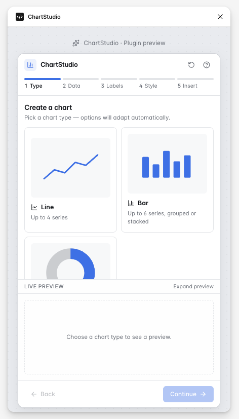
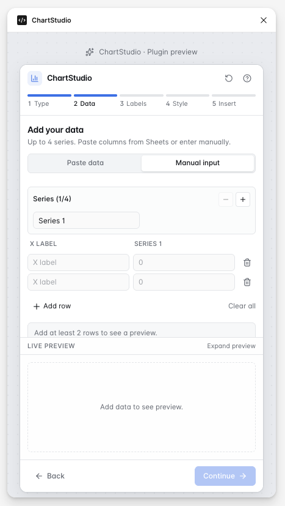
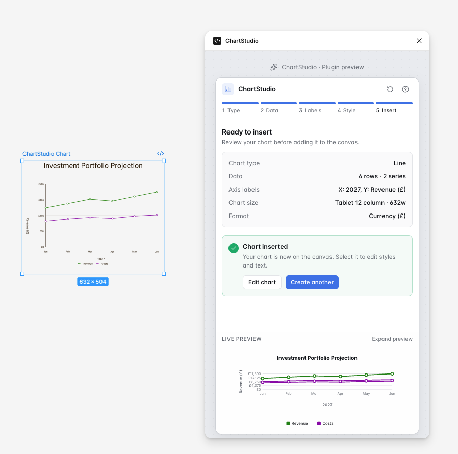
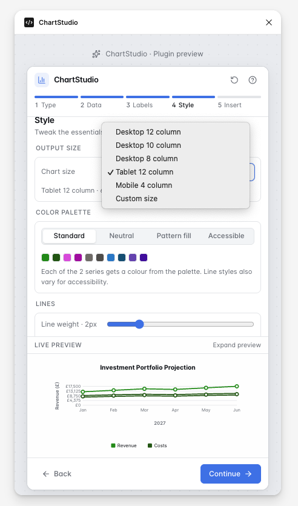
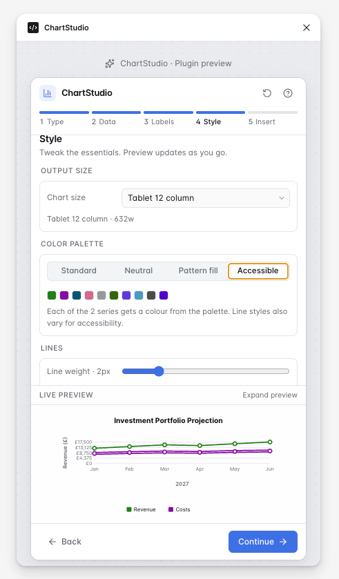
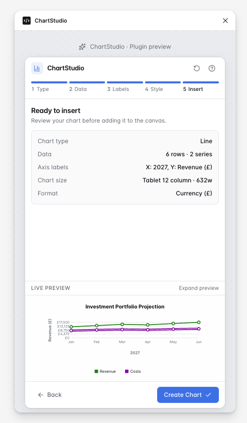

ChartStudio
A working Figma plugin prototype that helps designers create and insert consistent, accessible charts through a guided workflow.
I conceived the product, designed its interaction model and interface, defined the chart-system and accessibility rules, and directed its AI-assisted development from an identified workflow problem to a functioning plugin.
What I owned
I owned the product concept, interaction model, interface and chart-system rules from initial workflow through to the functioning prototype.
- Product concept, workflow and interaction model
- Plugin interface and configuration controls
- Chart layout and responsive rules
- Accessibility and reusable component behaviour
- AI-development prompts, acceptance criteria and implementation review
AI-assisted tools supported implementation; product direction and design decisions remained my responsibility.

The problem
While designing the data-visualisation experience for a financial proposition, I evaluated several chart plugins available through the Figma Community. Although they promised to accelerate chart creation, I found that some were unreliable, unnecessarily complicated or unable to produce the chart types and visual treatments the product required.
Accessibility was another significant limitation. Colour, labelling, readability and responsive behaviour still needed to be resolved manually. This revealed an opportunity for a more dependable, guided tool—one tailored to the organisation’s product requirements while embedding accessibility and consistency into the chart-creation workflow.

The product opportunity
I explored how a bespoke Figma tool could help product and UI designers:
- Create charts through a clear, guided workflow
- Generate the chart types required by the product
- Apply consistent visual, accessibility and responsive rules
- Insert completed charts directly into the Figma canvas
- Reduce repetitive manual design work

Proposed success measures
Because this was a self-initiated prototype without live analytics, I defined measures for future validation:
- Successful chart creation and insertion
- Completion time compared with manual construction
- Errors or hesitation during the workflow
- Accessibility and readability of the output
- Usability of generated layers and designer confidence
Key product decisions
Decision 1: Guided workflow instead of one complex screen
I divided chart creation into focused stages: chart selection, data entry, labelling, sizing, styling and final review. Presenting every control simultaneously would have been faster for experienced users to scan, but considerably more complicated for occasional users.
Trade-off: The staged journey introduces additional steps, so future testing should determine whether experienced users also need shortcuts or a condensed editing mode.
Decision 2: Responsive presets with a custom option
I introduced desktop, tablet and mobile output presets to help designers create charts that aligned with common product layouts. Completely arbitrary sizing would offer maximum freedom, but could also produce inconsistent output and readability problems at smaller dimensions.
Trade-off: Presets cannot represent every product context, making the custom option and clear resizing behaviour essential.


Decision 3: Accessibility during creation
Accessible palette choices, labelling, legends and value formatting were integrated into the main workflow rather than presented as a final compliance check. This encourages designers to consider readability and non-colour-dependent communication while constructing the chart.
Trade-off: Automated guidance can improve consistency but cannot guarantee that every chart is appropriate or accessible; designers must still assess meaning, content and context.
Decision 4: Review before insertion
I added a final review stage showing the selected settings and chart preview before insertion. Immediate insertion would shorten the workflow, but correcting an unsuitable chart afterwards would create unnecessary canvas clutter and rework.
Trade-off: The confirmation step adds friction, so it needs to remain concise and useful rather than merely repeating previous information.

Accessibility and system design
Accessibility and predictable system behaviour were built into chart creation rather than treated as a final check.
Rules built into creation
- Accessible palette choices
- Titles, axis labels and value formatting
- Legends that do not rely on colour alone
- Responsive output presets
- Reusable rules across line, bar and doughnut charts
- Readability at smaller sizes
Conditions exposed by implementation
- Keeping doughnut charts circular across dimensions
- Preventing label and legend collisions
- Aligning axes, labels and grid lines
- Maintaining spacing across breakpoints
- Keeping generated Figma layers usable
From concept to working prototype
I translated the intended workflow, component behaviour and chart rules into acceptance criteria, then directed and reviewed the AI-assisted implementation until the plugin could complete the core journey end to end.
Feedback and early validation
Fellow UI designers supported the need for a more reliable, accessible and tailored chart tool, reinforcing the relevance of the concept.
I evaluated the working prototype by selecting a chart, entering data, configuring its presentation and inserting the result into Figma. This established technical feasibility; structured usability testing with a wider group of designers remains the next validation stage.
Prototype journey
The demonstration follows the complete ChartStudio journey: adding source data, configuring labels and styling, reviewing the result and inserting the generated chart into Figma.
Prototype outcome
ChartStudio progressed from a problem identified during genuine financial-product work into a functioning Figma plugin prototype capable of generating and inserting charts.
The result demonstrates how I combine product thinking, detailed interaction design, accessibility and AI-assisted development to turn a workflow problem into a tangible tool.
Next steps
The next stage would be structured testing with product and UI designers to:
- Measure task success and completion time
- Identify hesitation and the need for expert shortcuts
- Validate keyboard and assistive-technology behaviour
- Assess output readability and generated layer usability
- Explore CSV import if testing confirms a genuine need